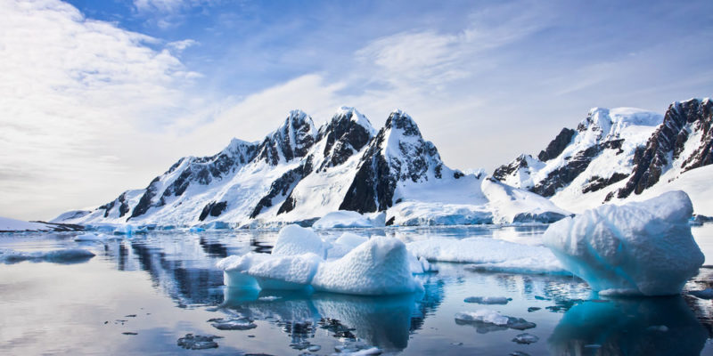
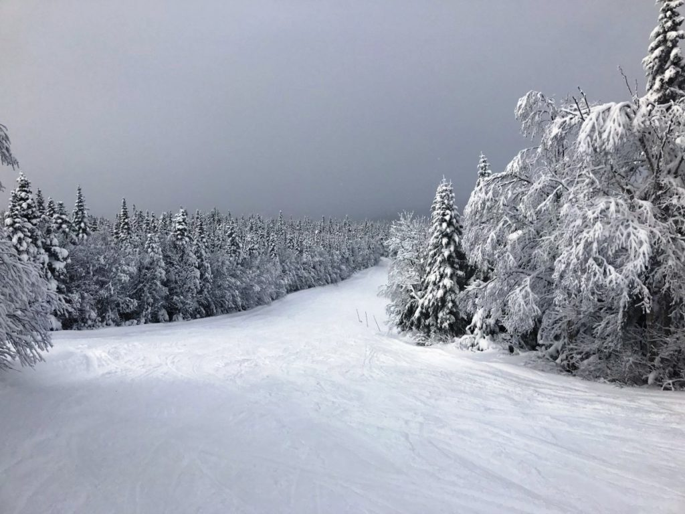
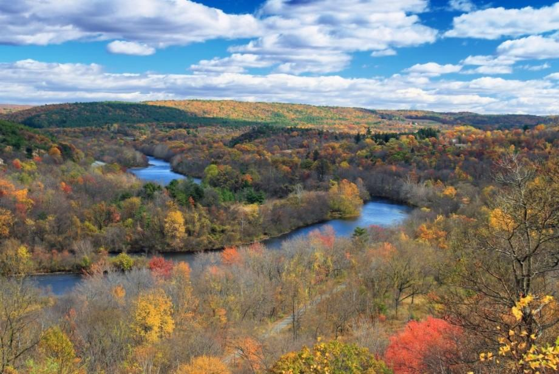
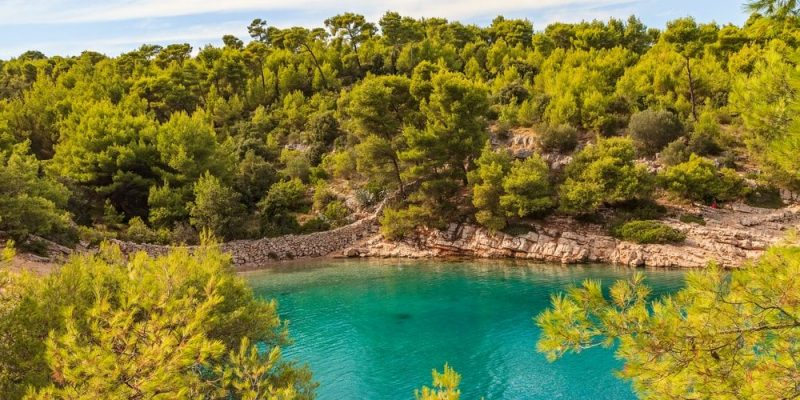

Climas Frios y Templados
Indice
El clima frio es un clima que incluye temperaturas por debajo de las del clima templado; suelen ser menores a 0º C. Sobrevivir a estas temperaturas no es tarea sencilla, se necesita estar muy bien preparado y saber a qué enfrentarse en cada circunstancia. Clima frío puede referirse a diversos tipos de clima: Clima polar , clima característico de las regiones polares de la Tierra. Clima gélido o glacial, tipo de clima polar bajo congelación permanente. Clima de tundra, tipo de clima polar, donde el frío no permite el desarrollo de bosques.
El Clima Templado caracteriza por temperaturas medias anuales aproximadamente entre 12 y 18 °C y precipitaciones medias entre 600 mm y 2000 mm anuales, aunque en determinados casos pueden tener desde 400 mm. Se subdivide en oceánicos (Cf), mediterráneos (Cs) y templados subhúmedos (Cw). Una región que posee un clima templado tiene una temperatura que varía regularmente a lo largo del año, con una media superior de 10 °C, en los meses más cálidos, y entre 0 y 18 °C, en los meses fríos, aunque anteriormente se ha considerado hasta -3°C. Poseen generalmente cuatro estaciones bien definidas: un verano relativamente caliente, un otoño con temperaturas gradualmente más bajas con el paso de los días, un invierno frío, y una primavera, con temperaturas gradualmente más altas. La humedad depende de la localización y de las condiciones geográficas de una región dada. Hay clima templado en la zona templada y un clima templado de montaña típico de la zona intertropical donde hay menor estacionalidad. En las regiones de los océanos localizadas en zonas de climas templados, se dice que poseen aguas templadas. La tercera letra indica el nivel, de temperaturas de verano , - a indica que la media del mes más cálido es superior a 22 °C; b indica que la media del mes más cálido es inferior a 22 °C, con por lo menos 5 meses con medias por encima de 10 °C; c indica que 4 o menos meses tienen temperaturas medias por encima de 10 °C.
Tipos de Clima frio y Templados
Clima Polar
El clima polar es un clima muy frío característico de las zonas polares y las de gran altura, donde puede predominar una vegetación muy escasa llamada tundra o ser de nieves perpetuas. También se denomina clima hekistotérmico.1 Es común que se encuentre en zonas glaciares o cercanas al círculo polar. Se trata de un clima extremo y uno de los más deshabitados del mundo. Se origina debido a su lejanía a la línea ecuatorial, causando que la radiación solar que llega a estos lugares sea mínima, causando un frío casi permanente. Por lo general son climas muy secos, donde la principal fuente hídrica está en la nieve y el hielo, así como lagos y lagunas congeladas. En Sudamérica se desarrolla en la alta montaña de la cordillera de los Andes, como se ve en la región de la Puna y en la cordillera de la Patagonia, donde los meses más cálidos no superan los 8°C, pudiendo bajar hasta los -50°C en los meses más fríos. No debe confundirse con el piso térmico frío, principalmente de la zona intertropical donde comúnmente se le suele denominar como "clima frío" a regiones con 10° a 14° de temperatura (encajando estas en categoría C de la clasificación de Koppen). De acuerdo con la clasificación climática de Köppen, al clima polar o nevado se le asigna la letra E y se define como aquellas regiones donde ningún mes posee una temperatura promedio superior a 10 °C
Caracteristicas del clima polar
- Ausencia de árboles naturales o vegetación arbórea
- Clima muy seco, cuya fuente principal de agua se basa en hielo y nieve.
- Precipitaciones escasas, casi nulas, siendo en forma de nieve cuando ocurren.
- Predomina en las zonas polares, mas alejadas de la línea del ecuador, donde la radiación solar es mínima
Clima gélido
El clima gélido, también llamado glacial, helado o nival es un subtipo de clima polar que se caracteriza por tener casi permanentemente temperaturas por debajo de 0 °C; y escasas precipitaciones. La humedad en el aire es inexistente y el viento suele ser bastante intenso,1 lo que hace aún más hostiles las condiciones de vida en este clima. El clima gélido se da principalmente en los dos polos, alcanzando unas condiciones más severas en la Antártida, puesto que al tratarse de un continente que además posee tierras altas, las temperaturas son más frías que las del Polo Norte, llegando a alcanzar los –70, –80 y hasta –89,2 °C (récord en la superficie de La Tierra).2El clima nival de las zonas más altas de las principales cordilleras del planeta se asemejan mucho al polar, pudiéndose dar en las cumbres del Himalaya, de los Andes, de las montañas de Alaska y otras cumbres. Su temperatura promedio mensual es siempre bajo 0 grados según el sistema de Köppen. Las regiones polares están delimitadas por el Círculo Polar Ártico y el Polo Norte y entre el Círculo Polar Antártico y el Polo Sur; es decir: entre los 66º 33' y los 90° de latitud norte y sur, respectivamente. Las temperaturas son muy bajas porque los rayos solares llegan muy inclinados respecto a la superficie terrestre.3
Clima continental
El clima continental reina sobre la mayor parte de la zona templada propiamente dicha, con la única excepción de la franja costera occidental, de tipo oceánico. Está muy bien representada en el hemisferio Norte, donde los continentes ocupan una gran extensión entre los 40º y 60º de latitud (Estados Unidos, Canadá, Europa, Siberia, figura 7). En el hemisferio Sur, a causa del adelgazamiento (o de la desaparición) de los continentes al Sur del paralelo 40º, no se encuentra el clima continental más que en la Argentina (Pampa seca del Sudeste, Patagonia). El clima continental es muy contrastado; un invierno frío y seco se opone a un verano cálido y lluvioso. La amplitud anual de las temperaturas es muy fuerte, puede alcanzar los 60º C. Las precipitaciones caen sobre todo durante la estación cálida, a finales de la primavera y en verano, en forma de violentos aguaceros de tormenta. Así se oponen un invierno frío y seco y un verano cálido y lluvioso, mientras que las estaciones intermedias, primavera y otoño, se recortan notablemente. 
Clima mediterraneo
Este tipo de clima se da particularmente en los países ribereños del mar Mediterráneo, de ahí su denominación, aunque se han establecido varios subtipos en relación con la distancia a las masas oceánicas. En sentido amplio, define el clima de las regiones costeras occidentales de los continentes comprendidos dentro de la zona de las latitudes medias, entre los 30º y los 45º, aproximadamente. Se caracteriza por tener inviernos relativamente suaves y húmedos y veranos cálidos, secos y soleados, resultado de la interacción de las masas de aire polar y de las altas presiones subtropicales. El promedio de precipitaciones se sitúa entre los 400 y los 700 mm, concentradas en el invierno, ya que durante el verano el clima está sujeto a la presencia de anticiclones subtropicales, y en el invierno, a las depresiones de la atmósfera. En ocasiones las precipitaciones pueden ser de una violencia extraordinaria, en algunas estaciones situadas al pie de una montaña se han recogido 1000 mm en veinticuatro horas. Las estaciones más lluviosas son el otoño y el invierno. Las temperaturas son suaves todo el año, con poca amplitud térmica. Sin embargo las condiciones geográficas locales pueden cambiar esto, por la presencia de barreras geográficas que dificulten el paso de las masas de aire frío o caliente. Lo más representativo del clima son los tres - cinco meses de aridez en verano, cuando está sometido a la influencia del anticiclón subtropical. Las temperaturas medias anuales varían entre los 12º C y los 18º C, y la amplitud térmica anual está comprendida entre los 10º y los 15º C por lo general. En invierno no son raras las olas de frío. En el borde Norte del Mediterráneo, se deben a los “vientos de tierra” que soplan desde los anticiclones fríos continentales hacia las bajas presiones del tibio Mediterráneo, o en Sudamérica, producidas por los vientos fríos del sur, que soplan desde los anticiclones subpolares. Inversamente las costas meridionales del Mediterráneo pueden ser invadidas por el aire abrasador y seco del Sahara. Las zonas representativas de este tipo de clima son las que circundan todo el Mediterráneo (figura 6), la costa de la zona central de Chile, California, costa meridional de Australia suroccidental, y la zona del suroeste de la República de Sudáfrica. También se presentan en este clima las degradaciones oceánicas y continentales. El clima mediterráneo oceánico (tipo Lisboa) se define por una amplitud térmica moderada y por un corto período seco. La degradación continental, por el contrario, agudiza las temperaturas extremas y refuerza la sequedad. Así sucede, por ejemplo, con el clima del interior de España, de invierno frío (tipo Madrid) y el de las altiplanicies argelinas, de matiz semidesértico (tipo Géryville)
| Libro | Autor |
|---|---|
| El libro del invierno | Rotraut Susanne Berner |
| Más allá del invierno | Isabel Allende |
| Clima mediterráneo | Luis Bagué Quílez |
| El clima continental | Frank Herbert |